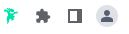

Capturando Fontes 36
Index Chrome Web Store
Instalar extensão
- Acessar o link do Web Store, acima
- intalar o Fonts Ninja
- .../ Mais Ferramentas / Extensões
- Configura pra fixar o ícone 
- Ao abrir uma página, clicando no icone do fonts Ninja, uma janela lateral abre.
- Passando ou cursor sobre uma fonte, aparece o nome, e na janela a opção de download mas é pago.
- Copiar o nome da fonte/cor e baixar no Da Font